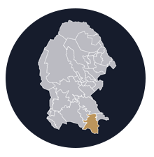

Discover
Saltillo, Coahuila, México.
Founded: July 15, 1577
Population
The total population of Saltillo in 2020 was
879,958
inhabitants, with 50.2% woman, and 49.8% men.
Saltillo is ranked as one of the five best cities to live according to the study Most Liveable Cities in Mexico 2019, prepared by the Strategic Communication Cabinet.
Downtown
Saltillo is the capital and largest city of the northeastern Mexican state of Coahuila and is also the municipal seat of the municipality of the same name. Mexico City, Monterrey, and Saltillo are all connected by a major railroad and highway.
The Desert Museum
The Desert Museum is a museum in Saltillo, Coahuila, that promotes an ecological culture. It was designed by the architect Francisco López Guerra and was inaugurated on 25 November 1999. It has a large collection of fossils and plants and includes autochthonous animals of the Mexican desert.
Alameda Lake
If you walk in the park in the center of the city, La Alameda de Saltillo, you can find an area with a large lake. This artificial lake is in the shape of the Mexican Republic and is decorated with islands and garden statues.
El Chiflón
The Chiflón canyon is an oasis in the middle of the desert, a place that is not as traveled as other canyons in the country. Located on the border between Saltillo and General Cepeda, here you can rappel and enjoy a small waterfall.
El Mirador
Family tourist attraction located in the highest part of the city, where you can admire the amazing panoramic view and its surroundings. In addition, it stands out for its historical importance, since the North American army camped on this site during the Battle of Angostura against the Mexican troops.